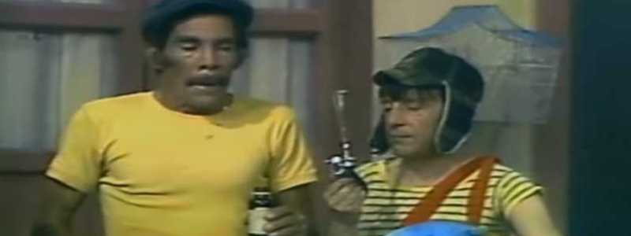
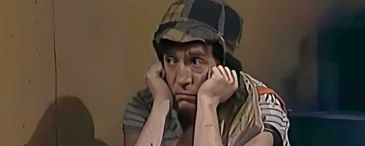

Como surigiu o Chaves?
O seriado surgiu em 1971, no México, como um quadro curto dentro do programa "Chespirito". Roberto Gómez Bolaños idealizou um esquete onde um adulto interpretava um garoto pobre. A ideia central era explorar a pureza e a ingenuidade infantil em situações do cotidiano. O sucesso foi tão grande que, em 1973, o quadro tornou-se uma série independente e semanal. A vila foi criada para servir como o cenário fixo onde as interações sociais aconteciam. Os personagens icônicos, como Quico e Seu Madruga, foram sendo integrados gradualmente ao elenco. Em poucos anos, o projeto transformou-se em um fenômeno cultural em toda a América Latina.
A primeira versão
O quadro de estreia do Chaves surgiu em 1971 como um esquete dentro do programa "Chespirito". Naquela época, o figurino era bem diferente, com Chaves usando uma camiseta branca simples. O cenário da vila ainda não estava totalmente construído, sendo apenas um fundo genérico. Roberto Gómez Bolaños já dividia a cena com Ramón Valdés e a atriz María Antonieta de las . Os diálogos eram mais curtos e o humor era focado em situações de mal-entendidos físicos. Nesta fase inicial, o personagem Quico ainda não existia, sendo integrado apenas algum tempo depois. A recepção foi tão positiva que o quadro garantiu a base para a série independente de 1973.

O sucesso
O programa conquistou o público através de um humor físico e universal de fácil compreensão. A simplicidade dos cenários permitia que o foco total ficasse na atuação brilhante do elenco. Roberto Gómez Bolaños escrevia roteiros que misturavam comédia com lições de solidariedade. A identificação foi imediata, pois a vila representava a realidade de muitos bairros latinos. O personagem Chaves cativou a audiência por sua resiliência e otimismo diante da fome. As frases de efeito e os bordões repetitivos criaram uma conexão única com os telespectadores. Em 1973, a série já era transmitida para diversos países, expandindo fronteiras rapidamente. A química entre os atores permitia improvisos que tornavam as cenas muito mais naturais. O programa conseguia reunir todas as idades na frente da TV com um humor livre de maldade. A trilha sonora e os efeitos sonoros marcantes ajudaram a construir uma identidade icônica. Mesmo com baixo orçamento, a criatividade da produção superava qualquer limitação técnica. O sucesso transformou os atores em estrelas internacionais com turnês por estádios lotados.
De onde veio tanta genialidade
Roberto Gómez Bolaños era um roteirista prodígio, apelidado de Chespirito por ser um "pequeno Shakespeare". Ele tinha uma formação sólida em engenharia, o que dava aos seus roteiros uma lógica matemática precisa. Sua escrita utilizava estruturas da Commedia dell'Arte, onde cada personagem tem uma máscara e função fixa. Ele entendia perfeitamente o tempo da comédia, calculando cada pausa e silêncio para gerar o riso. A genialidade vinha de transformar tragédias sociais, como a fome e o abandono, em poesia e humor. Bolaños não escrevia para crianças, mas sim textos universais que respeitavam a inteligência do público. Ele criou arquétipos humanos perfeitos, como o eterno devedor, a viúva soberba e o mestre paciente. A repetição de bordões funcionava como um código de segurança que gerava conforto na audiência. A direção de arte focava no essencial, permitindo que a expressividade dos atores fosse o destaque. Ele conseguia extrair o máximo de atores brilhantes, que traziam camadas humanas aos personagens. Sua sensibilidade permitia transitar entre a gargalhada e o choro em um intervalo de poucos segundos. O segredo final era a honestidade: ele falava sobre a condição humana com uma pureza sem igual.

Mais um pouco de Chaves
Esse é um dos episódios mais memoráveis da fase de ouro (1977). O Seu Madruga tenta desesperadamente ouvir a final de futebol, mas seu rádio vive falhando. A vila vira uma confusão com Chaves e Quico atrapalhando o silêncio necessário para a transmissão. O conflito aumenta quando rádios quebram ou ficam sem pilhas bem nos momentos mais decisivos. No fim, a frustração domina e ele não consegue acompanhar o time, virando um ícone do azar.